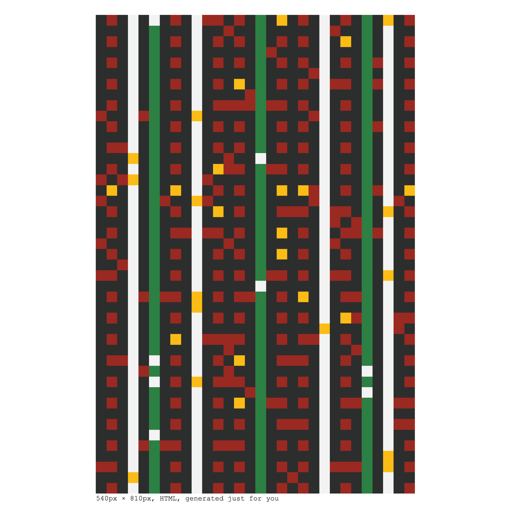
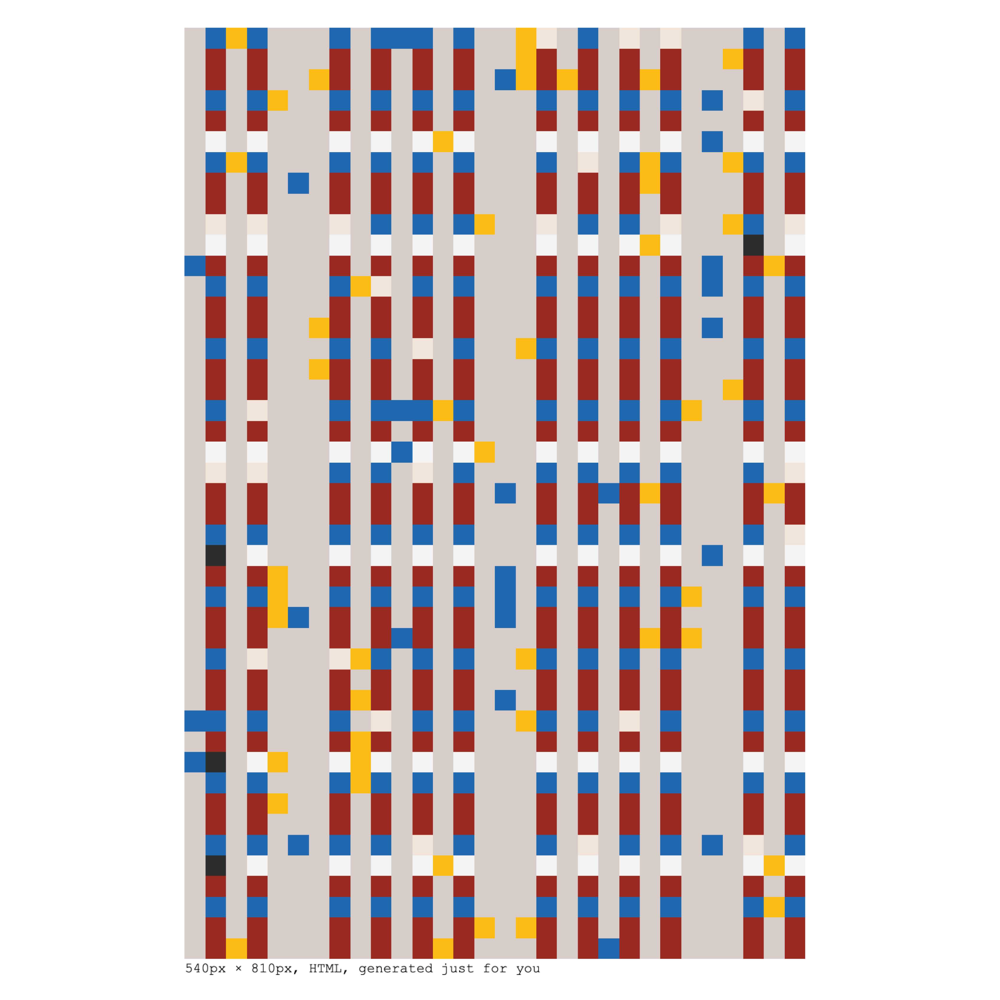

e(mail) art
2025 - ongoing
HTML-code in email clients generated by a Python script
(e)mail art is a project I started in July 2025, emerging from a desire to circumvent the algorithms of digital culture. Sometimes weekly, I send out emails containing an artwork made up of HTML code that was generated in Python to all subscribers. Every email is unique and is not reviewed by me before sending.
The project draws inspiration from Mail Art, art sent through the post, outside of the art world system, meant to be touched, shared, not handled with white gloves, but bent along the way, now reimagined in digital form. Email is ubiquitous and mundane; by choosing this medium, I question the value and permanence of digital art. Unlike NFTs, which promise scarcity and immutability, email might get flagged as spam, forwarded (read: copied), deleted without a second thought, or saved in a folder never to be opened again. Can art retain meaning when it can be so easily generated, received, and discarded? How can art live in digital spaces? (e)mail art continues my exploration of undervalued and unstable materials, like textiles and code.
Join the mailing list here!




Selection of screenshots of previous email art newsletters